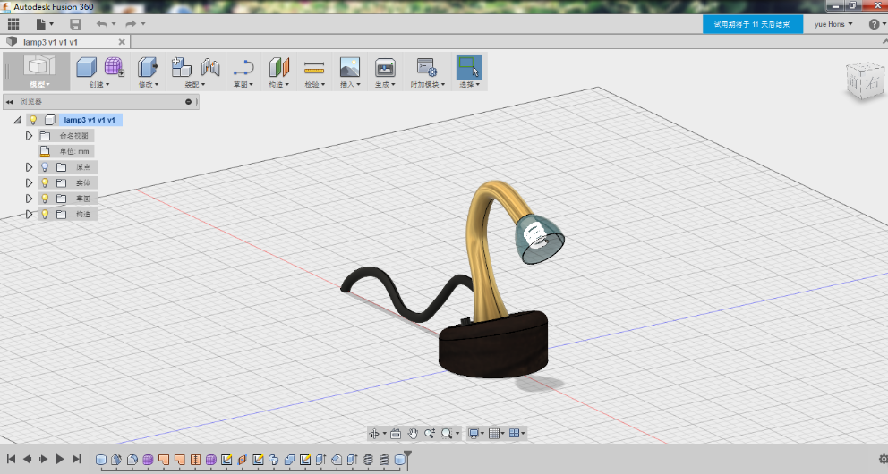
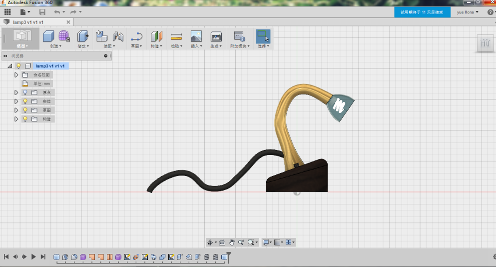
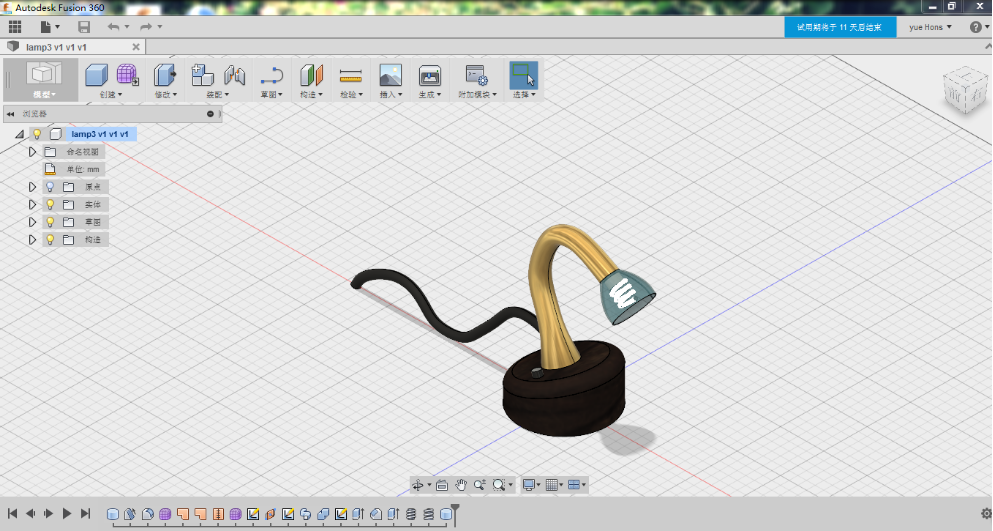

Just do what we love and leave away the rest.
Downloads:
· ZIP
· TAR
Day 1 Haven’t chosen the lesson C2Ts.代码到实物
Day 2 Come to X9457 and listen to Mr.WangHeng’s Fusion360 and I made a lamp by myself.



Day 3
Day 4
Day 5
This automatic page generator is the easiest way to create beautiful pages for all of your projects. Author your page content here using GitHub Flavored Markdown, select a template crafted by a designer, and publish. After your page is generated, you can check out the new gh-pages branch locally. If you’re using GitHub Desktop, simply sync your repository and you’ll see the new branch.
We’ve crafted some handsome templates for you to use. Go ahead and click 'Continue to layouts' to browse through them. You can easily go back to edit your page before publishing. After publishing your page, you can revisit the page generator and switch to another theme. Your Page content will be preserved.
If you prefer to not use the automatic generator, push a branch named gh-pages to your repository to create a page manually. In addition to supporting regular HTML content, GitHub Pages support Jekyll, a simple, blog aware static site generator. Jekyll makes it easy to create site-wide headers and footers without having to copy them across every page. It also offers intelligent blog support and other advanced templating features.
You can @mention a GitHub username to generate a link to their profile. The resulting <a> element will link to the contributor’s GitHub Profile. For example: In 2007, Chris Wanstrath (@defunkt), PJ Hyett (@pjhyett), and Tom Preston-Werner (@mojombo) founded GitHub.
Having trouble with Pages? Check out our documentation or contact support and we’ll help you sort it out.
Project maintained by YueHons
Hosted on GitHub Pages — Theme by mattgraham